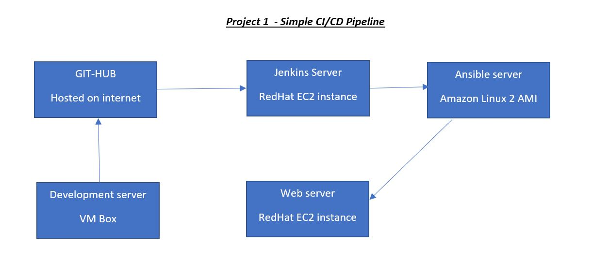

Simple CI/ CD pipeline tool using GitHub, Jenkins, Ansible on AWS(RedHat and Amazon Linux 2 AMI server)
 1. Update the Jenkins server and install Jenkins. 2. Update the Ansible server and install ansible and update hosts file with web server private IP address. 3. Update and install apache on web server and start the httpd service. 4. Make password less authentication between Jenkins –> Ansible & Ansible –> web server (change "Password authentication" to yes in sshd confile file). 5. Go to ansible server and create a directory at ec2-user home-location called “sourcecode” and write playbook(playbook.yml) to transfer index.html file. 6. Go to GitHub and create a repository. 7. Now go to development server and write the source code(index.html) and post into GitHub. 8. Integrate the github with the Jenkins so that when the developer commit the job should run. Get the Jenkins url and go to github setting. And then webhook and add webhook. ADD URL http://Jenkins_URL:8080/github-webhook/ and content-type – application/json. For secret go to Jenkins dashboard, and user and then configure. Click on add new token and generate and copy the token, apply and save in Jenkins. Go to github and paste the token on secret field and add webhook. 9. Now go to Jenkins and install one plugin called “publish over ssh”. Because once the Jenkins will build the compile, then it will share the result to ansible server over ssh. Go to manage Jenkins, manage plugin and available tab. Search ssh in field and install without restart. 10. Go to manage Jenkins, configure system search for SSH server(it’s coming because we’ve installed “publish over ssh” plugin). Click add. Give “Jenkins” as name and private ip of Jenkins in hostname field, username as ec2-user. Click on advanced and click on use password authentication and give the password. Test it, it will fail. Set the password for the user and make the necessary changes in /etc/ssh/sshd.config file. It should succeed this time. 11. Go to Jenkins and new item, give the job name “demo-project” as Freestyle project. Give git in the source code management. Get the URL from GitHub and paste in Jenkins repository URL. Getting error, need to install git package on Jenkins server. (yum install git* -y). After the installation the error should go away. Go to Build triggers and then “GitHub hook trigger for GITScm pooling”. Save it. Give the “build now” to see where the file will generate after build (/var/lib/jenkins/workspace/demo-project). Again, go to project demo-project configuration, Click on add build and then “send files or execute command over SSH”. Select Jenkin server, go to Exec command – rsync -avh /var/lib/jenkins/workspace/demo-project/*.html ec2-user@ip_of_ansible_server:/tmp/index.html. Hit apply and save. 12. Give the build now to check whether the Jenkins server copying the index.html file to ansible server at /tmp location. 13. Go to manage Jenkins, configuration system, ssh servers and add ansible name, hostname, username, advanced and use password authentication and give password. Test it, should be succeed. Apply and save. 14. Go to project’s configuration and edit it, go to post-build actions, select send build artifacts over ssh. Select ansible this time in SSH server, and exec command ansible-playbook /home/ec2-user/sourcecode/playbook.yml -become 15. Now go to development box and change the source code, after changing the source code you need to commit and push to github.